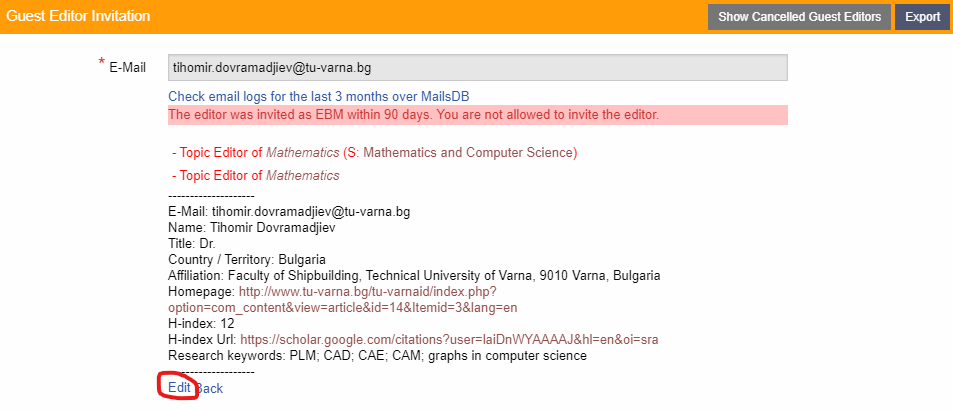
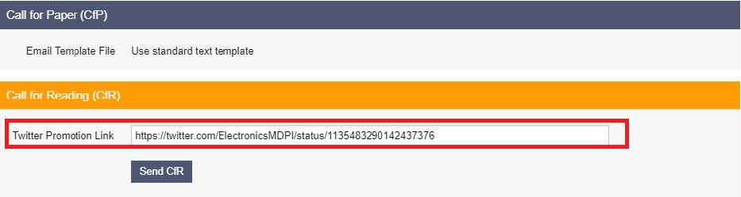

Special Issue Managing (English Version)
✉️ 最新通知和工作重点记录
1. GE/EBM/RB 邀请条件¶
Current
Affiliation |
New Zone 1 (Except for China)
& South Africa |
China Top 1-11 Univ
& Hong Kong, Macau |
China Top 12-22 Univ |
China Top 23-55 Univ |
China Whitelist |
| EBM |
Assoc. Prof. 及以上
H-index≥15, Pure Zone 1
(Priority: USA, UK, CA, DE, AU)
(Secondly: JP, FR, AT, IL)
（其他一区国家仅邀请截刊不重开的GE） |
Assoc. Prof. 及以上
H-index≥15 (Scopus) |
Assoc. Prof. 及以上
H-index≥25 (Scopus) |
Assoc. Prof. 及以上
H-index≥30 (Scopus) |
- |
| GE |
Assoc. Prof. 及以上
H-index≥10
≥15 (Scopus) for TW, KR |
Assoc. Prof. 及以上
H-index≥10 (Scopus) |
Assoc. Prof. 及以上
H-index≥20 (Scopus) |
- |
| RB |
Dr. 及以上
近五年发文5篇
H-index≥5 (Scopus)
给Mathematics审过稿且报告质量好 |
Dr. 及以上
近五年发文5篇
H-index≥10 (Scopus)
给Mathematics审过稿且报告质量好 |
- 不要邀请Independent Researcher和只在公司任职的学者当EBM/GE/RB; 不要邀请本期刊其他同事的EBM/GE/TAP/RB（超过6月也不行，除非对方同意）; 特刊截刊不重开的一区GE可邀请加入EB/TAP，满足h-index即可，不受国家限制
- 不要邀请China Medical University (tw)及其附属机构的学者，其他台湾和韩国学者注意看合作者和投稿记录
- 目前在Zone 1国家工作的学者即可算作Zone 1，但要确保他们不来自SA,EG,PK，且与这些国家没有合作
- 英国、澳大利亚等国家的Senior Lecture、Reader等同于Assoc. Prof.；中国的副研究员等同于Assoc. Prof.
- 可以邀RB和TAP建特刊，但是需要邀请到符合GE资质的Senior学者当co-GE，且必须提供3~8篇pp才能上线
- 禁止Topic: Pythagorean fuzzy; Neutrosophic fuzzy; Picture fuzzy; Grey fuzzy; q-rung Orthopair fuzzy; Conformable (fractional) derivatives; Jumarie derivatives; Atangana-Baleanu derivatives; Caputo-Fabrizio derivatives; Katugampola derivative; Geometric Function Analysis (部分话题); Mathematics Education
- 敏感Topic: Fixed Point（详情）; Mathematical Psychology（勿主动邀请）
- 特殊Topic:
(a) Computer Science相关方向: GE/EB必须满足额外条件 H-index≥15 (Scopus)
(b) Fuzzy Set Section相关方向: 可以邀请H-index≥20，并且有一区背景（祖籍一区并有一区的合作者）但目前在 Brazil/India/Vietnam/Serbia 工作的学者当GE
(c) Algebra and Geometry相关方向: 可以邀请H-index≥20，并且有一区背景（祖籍一区并有一区的合作者）但目前在 Brazil/India 工作的学者当GE
(d) Finance, Business, Marketing&Management相关方向: 需要有数学相关教育/工作背景，或近5年有5篇发文在数学相关期刊上（如Journal of Computational Finance，Quantitative Finance等）
China Top 1–11 Universities:
| Beijing University |
北京大学 |
|
Shan Dong University |
山东大学 |
|
Chinese Academy of Sciences |
中科院 |
|
Shanghai Jiaotong University |
上海交通大学 |
| Fudan University |
复旦大学 |
|
Sun Yat-sen University |
中山大学 |
|
Zhejiang University |
浙江大学 |
|
Southeast University |
东南大学 |
| Tsinghua University |
清华大学 |
|
University of Science and Technology of China |
中国科学技术大学 |
|
Xi'an Jiaotong University |
西安交通大学 |
|
|
|
China Top 12–22 Universities:
| Nankai University |
南开大学 |
|
Northeast Normal University |
东北师范大学 |
|
National University of Defense Technology |
国防科技大学 |
|
Nanjing University |
南京大学 |
| Renmin University of China |
中国人民大学 |
|
Xiamen University |
厦门大学 |
|
Huazhong University of Science and Technology |
华中科技大学 |
|
Tongji University |
同济大学 |
| Beijing Normal University |
北京师范大学 |
|
Harbin Institute of Technology |
哈尔滨工业大学 |
|
University of Electronic Science and Technology |
电子科技大学 |
|
|
|
China Top 23-55 Universities:
| Chongqing University |
重庆大学 |
|
Lanzhou University |
兰州大学 |
|
China University of Mining and Technology |
中国矿业大学 |
|
China University of Petroleum |
中国石油大学 |
| Dalian University of Technology |
大连理工大学 |
|
East China University of Science and Technology |
华东理工大学 |
|
Sichuan University |
四川大学 |
|
Wuhan University |
武汉大学 |
| University of Science and Technology Beijing |
北京科技大学 |
|
Wuhan University of Technology |
武汉理工大学 |
|
Beijing Institute of Technology |
北京理工大学 |
|
Suzhou University |
苏州大学 |
| Nanjing Agricultural University |
南京农业大学 |
|
South China University of Technology |
华南理工大学 |
|
Fuzhou University |
福州大学 |
|
Beijing University of Chemical Technology |
北京化工大学 |
| University of Chinese Academy of Sciences |
中国科学院大学 |
|
Tianjin University |
天津大学 |
|
Jilin University |
吉林大学 |
|
East China Normal University |
华东师范大学 |
| Zhengzhou University |
郑州大学 |
|
Northwestern Polytechnical University |
西北工业大学 |
|
China University of Geosciences |
中国地质大学 |
|
Institute of Applied Physics and Computational Mathematics |
应用物理与计算数学研究所 |
| Hunan University |
湖南大学 |
|
Central South University |
中南大学 |
|
Jiangsu University |
江苏大学 |
|
|
|
| Shanghai University |
上海大学 |
|
China Agricultural University |
中国农业大学 |
|
|
|
|
|
|
China Universities in Whitelist (Top 55-)China Universities in Whitelist (Top 55-)
| Institute of Chemistry Cas |
中国科学院化学研究所 |
|
Nanjing Normal University |
南京师范大学 |
|
National Astronomical Observatory Cas |
中国科学院国家天文台 |
|
Qufu Normal University |
曲阜师范学院 |
| Changchun Institute of Applied Chemistry Cas |
长春应用化学研究所 |
|
Qingdao University |
青岛大学 |
|
Guangdong University of Technology |
广东工业大学 |
|
Jiangxi Normal University |
江西师范大学 |
| Beihang University |
北京航空航天大学 |
|
Hefei University of Technology |
合肥工业大学 |
|
Nantong University |
南通大学 |
|
Tianjin Polytechnic University |
天津工业大学 |
| Chinese Academy of Agricultural Sciences |
中国农业科学院 |
|
China Pharmaceutical University |
中国药科大学 |
|
Henan Normal University |
河南师范大学 |
|
Institute of Automation Cas |
自动化研究所 |
| Institute of Physics Cas |
中国科学院物理研究所 |
|
Yangzhou University |
扬州大学 |
|
Kunming University of Science and Technology |
昆明理工大学 |
|
Northwest Normal University China |
中国西北师范大学 |
| Shanghai Institutes for Biological Sciences Cas |
上海生命科学研究所 |
|
Harbin Engineering University |
哈尔滨工程大学 |
|
Shantou University |
汕头大学 |
|
Wenzhou University |
温州大学 |
| Dalian Institute of Chemical Physics Cas |
大连化学物理研究所 |
|
North China Electric Power University |
华北电力大学 |
|
Zhejiang Sci Tech University |
浙江理工大学 |
|
Hebei University |
河北大学 |
| Institute of High Energy Physics Cas |
中国科学院高能物理研究所 |
|
Beijing Jiaotong University |
北京交通大学 |
|
Yanshan University |
燕山大学 |
|
Changchun Institute of Optics Fine Mechanics Physics Cas |
长春光学精密机械物理研究所 |
| Shanghai Institute of Organic Chemistry Cas |
上海有机化学研究所 |
|
|
|
|
Guangxi University |
广西大学 |
|
South China Sea Institute of Oceanology Cas |
中国科学院南海海洋研究所 |
| Huazhong Agricultural University |
华中农业大学 |
|
Institute of Geographic Sciences Natural Resources Research Cas |
地理科学研究所自然资源研究所 |
|
Institute of Semiconductors Cas |
中国科学院半导体研究所 |
|
Institute of Hydrobiology Cas |
中国科学院水生生物研究所 |
| Nanjing University of Science and Technology |
南京理工大学 |
|
Guangzhou Institute of Geochemistry Cas |
广州地球化学研究所 |
|
Shanghai Normal University |
上海师范大学 |
|
Northeast Agricultural University China |
中国东北农业大学 |
| Northwest A&F University |
西北农林大学 |
|
South China Agricultural University |
华南农业大学 |
|
Shenyang Pharmaceutical University |
沈阳药科大学 |
|
Fujian Agriculture Forestry University |
福建农林大学 |
| Jiangnan University |
江南大学 |
|
University of Jinan |
济南大学 |
|
Yunnan University |
云南大学 |
|
Huaqiao University |
华侨大学 |
| Nanjing Tech University |
南京工业大学 |
|
Shanghai Institute of Materia Medica Cas |
上海市药物研究所 |
|
Hunan Normal University |
湖南师范大学 |
|
Hangzhou Dianzi University |
杭州电子科技大学 |
| National Center for Nanoscience Technology China |
中国国家纳米科学中心 |
|
Shaanxi Normal University |
陕西师范大学 |
|
Shandong Agricultural University |
山东农业大学 |
|
Chinese Academy of Forestry |
中国林业科学研究院 |
| Institute of Metal Research Cas |
中国科学院金属研究所 |
|
Nanjing University of Information Science and Technology |
南京信息工程大学 |
|
State Key Lab Oncology South China |
华南肿瘤学国家重点实验室 |
|
Tianjin University Science and Technology |
天津科技大学 |
| Southwest University China |
中国西南大学 |
|
Institute of Process Engineering Cas |
中国科学院过程工程研究所 |
|
Chinese Center for Disease Control Prevention |
中国疾病预防控制中心 |
|
State Oceanic Administration |
国家海洋局 |
| Nanjing University of Aeronautics Astronautics |
南京航空航天大学 |
|
Southwest Jiaotong University |
西南交通大学 |
|
Institute of Oceanology Cas |
中国科学院海洋研究所 |
|
Collaborative Innovation Center of Chemical Science and Engineering (Tianjin) |
天津化学化工协同创新中心 |
| Ocean University of China |
中国海洋大学 |
|
Institute of Atmospheric Physics Cas |
中国科学院大气物理研究所 |
|
Capital Normal University |
首都师范大学 |
|
China Jiliang University |
中国计量大学 |
| Northeastern University China |
中国东北大学 |
|
Shanghai Institute of Applied Physics Cas |
上海应用物理研究所 |
|
Sichuan Agricultural University |
四川农业大学 |
|
Nanjing Forestry University |
南京林业大学 |
| Donghua University |
东华大学 |
|
Institute of Genetics Developmental Biology Cas |
中国科学院遗传发育生物学研究所 |
|
Shandong University of Science and Technology |
山东科技大学 |
|
Institute of Urban Environment Cas |
中国科学院城市环境研究所 |
| Jinan University |
暨南大学 |
|
Nanjing University of Posts Telecommunications |
南京邮电大学 |
|
Chinese Academy of Engineering Physics |
中国工程物理研究院 |
|
Shanghai Institute of Optics Fine Mechanics |
上海光学精密机械研究所 |
| Shanghai Institute of Ceramics Cas |
上海硅酸盐研究所 |
|
Ningbo University |
宁波大学 |
|
Shandong Normal University |
山东师范大学 |
|
Qilu University of Technology |
齐鲁工业大学 |
| Central China Normal University |
华中师范大学 |
|
Hohai University |
河海大学 |
|
China Meteorological Administration |
中国气象局 |
|
Hebei University of Technology |
河北工业大学 |
| Research Center for Eco Environmental Sciences Rcees |
生态环境科学研究中心 |
|
Zhejiang Normal University |
浙江师范大学 |
|
Institute of Soil Science Cas |
中国科学院土壤科学研究所 |
|
Hunan Agricultural University |
湖南农业大学 |
| Ministry of Education China |
中国教育部 |
|
Beijing Forestry University |
北京林业大学 |
|
Kunming Institute of Botany Cas |
昆明植物研究所 |
|
Xinjiang University |
新疆大学 |
| Shenzhen University |
深圳大学 |
|
Xiangtan University |
湘潭大学 |
|
Academy of Mathematics System Sciences Cas |
中国科学院数学与系统科学研究院 |
|
University of South China |
华南大学 |
| University Town of Shenzhen |
深圳大学城 |
|
Shanxi University |
山西大学 |
|
University of Shanghai for Science and Technology |
上海理工大学 |
|
Chinese Academy of Fishery Sciences |
中国水产科学院 |
|
|
|
Hangzhou Normal University |
杭州师范大学 |
|
Northeast Forestry University China |
中国东北林业大学 |
|
North China University of Science and Technology |
华北理工大学 |
| Nanchang University |
南昌大学 |
|
Institute of Botany Cas |
中科院植物研究所 |
|
Shenzhen Institute of Advanced Technology Cas |
深圳市先进技术研究院 |
|
Guizhou University |
贵州大学 |
| Fujian Institute of Research on The Structure of Matter Cas |
福建省物质结构研究所 |
|
Beijing University of Posts Telecommunications |
北京邮电大学 |
|
Southern University of Science and Technology |
南方科技大学 |
|
Anhui University of Technology |
安徽工业大学 |
| Northwest University Xi an |
西北大学(西安) |
|
Institute of Zoology Cas |
中国科学院动物研究所 |
|
China National Petroleum Corporation |
中国石油天然气集团公司 |
|
Ningbo Institute of Materials Technology and Engineering Cas |
宁波材料技术与工程学院 |
| Lanzhou Institute of Chemical Physics Cas |
兰州化学物理研究所 |
|
Chinese Academy of Geological Sciences |
中国地质科学院 |
|
Hubei University |
湖北大学 |
|
Wuhan University of Science and Technology |
武汉科技大学 |
| Xidian University |
西安电子科技大学 |
|
Henan University |
河南大学 |
|
Changzhou University |
常州大学 |
|
Guangzhou University |
广州大学 |
| Zhejiang University of Technology |
浙江工业大学 |
|
Qingdao University of Science and Technology |
青岛科技大学 |
|
Institute of Coal Chemistry Cas |
中国科学院煤炭化学研究所 |
|
Shanghai Institute of Microsystem Information Technology Cas |
上海微系统信息技术研究所 |
| Institute of Geology Geophysics Cas |
中国科学院地质地球物理研究所 |
|
Institute of Microbiology Cas |
中国科学院微生物研究所 |
|
Heilongjiang University |
黑龙江大学 |
|
|
|
| South China Normal University |
华南师范大学 |
|
Taiyuan University of Technology |
太原理工大学 |
|
Anhui Normal University |
安徽师范大学 |
|
|
|
| Beijing University of Technology |
北京工业大学 |
|
Anhui University |
安徽大学 |
|
Jiangsu Normal University |
江苏师范大学 |
|
|
|
Excel 格式下载： Chinese University Ranking.xlsx
- 中国co-GE来自非白高校的比例应<50%（不含50%）
- 中国co-GE如果来自非白名单高校，Scopus h-index≥30
RB特殊说明RB特殊说明
- RB每月主动审稿最多5次，超过5次需联系ME
- 上线RB后及时更新 Google在线表格
- 期刊RB数量需保持在上年度发文量的10%以内。比如Mathematics 2020年度发文2297，RB数量在2021年度不能超过229人
- 一旦发现有RB提交不合格报告，期刊需要在PM和publisher指导下出面沟通，如有必要应给该审稿人提供审稿培训；若一年内提交三次Poor报告（ME需要复核是否是真的poor），需通知清退该RB
- 期刊每年3月及9月整理RB审稿比例，若一年内审过稿件的RB数量占总RB数量的70%及以上则为正常，若不到70%会清退沉寂RBM
- 清退RB之前，添加该RB的SIE需协助ME向Publisher简要陈述原因，然后写信联系RB说明情况并询问解释；信里面指出如果没有收到回复，我们将认为他们不再对RB感兴趣，会将他们移除（不允许不通知RB直接移除）
- 被加入审稿人黑名单的学者不允许加入RB，除非学者愿意主动学习审稿流程并脱黑；RB在任职期间如被加入审稿人黑名单，将会在每年3月及9月被集中清理
- 其他说明见公司规定: http://blog.mdpi.lab/team/committee/guide/59
如何让 Publisher 帮忙添加 GE如何让 Publisher 帮忙添加 GE
1. 确保co-GE符合 邀请规则
2. 在特刊页面输入GE邮箱后，点击Edit编辑GE信息，确保所有信息均填写完整；
3. 对于没有GE邀请记录无法Edit的，点击 https://susy.mdpi.com/user/guest_editor/add 自行新增GE信息
4. 将特刊的链接和GE邮箱填在 SAP Ursula在线表格 中，Ursula会在2天内帮忙添加
5. 涉及到其他期刊或其他同事资源的，提前跟相关的同事沟通好，同时留存好聊天记录或截图

邀请前自行仔细检查资质，GE/EB 同意后请报给 Syna Mu 检查，DDL找 Nemo Guan 确定；RB报给Ashley Chang检查。 EBM QC通过后还须填写EBM登记表格 | EiC同意信附件
2. 免费和折扣¶
2.1 基本要求¶
- 邀稿作者通常需要是通讯作者或一作，以下 H-index 均指代通讯或一作；所有折扣仅针对学术机构的学者（公司不享受折扣）
- 邀稿作者来自 USA, UK, CA, DE, AU, JP, FR, AT, IL， H-index≥10：最多给免费（不用管co-authors）; H-index≥5：最多给50%折扣; H-index<5：最多给20%折扣
- 邀稿作者来自 其他一区国家 (CN, HK, TW, KR除外)， 所有co-authors均需满足 Discount Country List，然后 H-index≥10(Scopus)：最多给免费; H-index≥5(Scopus)：最多给20%折扣; H-index<5(Scopus)：最多给10%折扣
- 邀稿作者来自 CN, HK, TW, KR和非一区国家（ZA等），不提供任何折扣; GE强烈要求时不要直接回绝，请先询问ME
- 所有 GE 可以享受一篇免费 Review（建议20页，参考文献50），不受上述条件限制
- 为了防止作者灌水， 每个作者每年最多在 Mathematics 上发表6篇文章（只要带名字就算）
Tips: GE提供colleague list询问折扣时，建议回复折扣区间（例如0-50%，最高50%）而非固定折扣，以防出现共同作者带有二三区的情况。
2.2 折扣数量¶
- GE包括非纯一区学者或来自中国、台湾、韩国、非一区国家：无折扣
- 所有GE来自除上述以外的其他一区国家：总额1000%折扣
- 默认只有100%和50%折扣类型，无特殊情况不要用到其他折扣类型
- 当GE来自多个国家，按照最低原则分配折扣，同时也可考虑邀稿作者所属国家情况
Tips: 大部分特刊的折扣都用不完，因此建议和GE沟通时不用一开始就告诉GE特刊的折扣上限，让GE尽量去多发邀请即可。遇到需要折扣的学者，让学者提供全部信息再告知其具体折扣。
2.2 编委的折扣¶
- 所有非一区的EBM/TAP/RB默认均无折扣
- 一区EBM每年有1篇免费，TAP每年有1篇50%折扣（Review为100%），RB有20%折扣
- 折扣数量和额度会根据期刊邀稿计划有所调整
2.4 优惠券申请步骤¶
- 在Susy的Manage Vouchers中提交优惠券申请，所有能填的信息（包括Manuscript ID）都填写完整
- 查询享受折扣的作者过去两年是否在我们期刊有发文，如果有，则需要在申请优惠券之前给作者发送推广信。建议将推广信情况写在优惠券note中，如 Promotion Letter Sent; No publication in the past 2 years
推广信邮件模板推广信邮件模板
[Mathematics] (IF 2.258, ISSN 2227-7390) Promote Your Published Papers
作者以前发表的文章引用小于等于2的情况：
Thank you very much for your contribution to /Mathematics/, your manuscript mathematics-XXXXXX is now under review. We will keep you informed about the status of your manuscript.
In addition, you have published a paper/some papers in /Mathematics/ in the past two years with the citation of about XX times.
Based on your reputation and research interests, we believe that your results should attract more citations and attention. Therefore, could you please promote the paper/papers to your colleagues, friends, or related scholars by sharing the paper using the button on the right sidebar of the article page?
1. paper link
2. paper link
Thank you again for your support, please feel free to let me know if you encounter any problems.
作者以前发表的文章引用大于等于3的情况：
Thank you very much for your contribution to /Mathematics/, your manuscript mathematics-XXXXXX is now under review. We will keep you informed about the status of your manuscript.
In addition, I am glad to inform you that your paper/papers published in /Mathematics/ in 20XX has/have been cited XXX/XX times, respectively. Congratulations on your great work! To encourage open scientific discussions and increase the visibility of your results, could you please promote the paper/papers to your colleagues, friends, or related scholars by sharing the paper using the button on the right sidebar of the article page?
1. paper link
2. paper link
Thank you again for your support, please feel free to let me know if you encounter any problems.
- 等待批准，其中特刊优惠券和EB优惠券等待ME批，Exception Case等待Publisher批，如果24小时未批下来请给审批人Skype留言
3. 特刊上线流程¶
3.1 新建特刊¶
- 只有转正SIE可以新建特刊（Create Special Issue）。
- 对于试用期SIE，需要让tutor操作并将Owner指定为徒弟邮箱（2021-05-26新规实施前，已转正或未转正SIE自己创建的特刊均可以继续跟进）。
- 特刊Type有以下四种：
- Normal、重开的特刊：需要可行性报告，也需要planned papers（或potential author list）
- Conference：需要可行性报告，不需要planned papers
- Memory、Anniversary：不需要可行性报告，也不需要planned papers
图片示例图片示例
3.2 可行性分析报告¶
- 可行性分析报告需要在 新建每个Normal和Conference特刊时 提交
- 修改特刊标题不需要重新提交可行性分析报告（修改特刊标题时请确保 Scope 不要产生太大变化）
常规特刊可行性分析报告示例常规特刊可行性分析报告示例
Special Issue Feasibility Check Form
1. *SI Title: Stochastic Modelling and Applied Probability in Climatology
2. Select a Section (未打星号，可不填)
3. *Research Topics/Keywords: Stochastic; Probability; Climatology
4. *SI on similar title/keywords in MDPI journal (https://reviewer-api.susy.mdpi.com/topic/special_issue?fields%5Bkeywords%5D=)
Search criteria: Stochastic, Climatology
Number of Closed SIs: 0
Number of Open SIs: 1
Link: https://reviewer-api.susy.mdpi.com/topic/special_issue?fields%5Bkeywords%5D=Stochastic,%20Climatology
Number of Pending Online SI: 0
Link: https://reviewer-api.susy.mdpi.com/topic/special_issue_pending?fields%5Bkeywords%5D=Stochastic,%20Climatology
5. List journals and sections related to the title (未打星号，可不填)
Keywords:
Journals: Journal 1; Journal 2; Journal 3……
6. *Publication record in the SI scope, in the last 5 years, using relevant keywords
例1：
Topic: AND (Climatology OR Medicine)
Timespan: Last 5 years
Indexes: Web of Science Core Collection
Total Results: 2791
例2：
Topic: Stochastic Probability Climatology
Timespan: Last 5 years
Indexes: Google Scholar
Total Results: 16600
7. *Conclusion
After evaluation, I found that there are only 5 similar Special Issues in MDPI journal. Among them, 2 Special Issues were already closed. There is no Pending Online Special Issue on a similar topic.
The Publication record indicates that there are 5000 papers published in this field in the past 5 years, so this topic is interesting and may attract many submissions. I suggest creating this Special Issue entitled "Stochastic Modelling and Applied Probability in Climatology and Medicine".
会议特刊可行性分析报告示例会议特刊可行性分析报告示例
Please fill in the following form if this Special Issue is a Conference Special Issue
1. *Conference Basic Information:
Conference Name: IFSA-EUSFLAT 2021
Date: 19-24 September 2021
Location: Bratislava, Slovakia
Conference Organizer: The European Society for Fuzzy Logic and Technology (EUSFLAT)
2. *Edition:
The 19th World Congress of the International Fuzzy Systems Association
The 12th Conference of the European Society for Fuzzy Logic and Technology
3. *Attendee Numbers: about 500
4. Publication numbers and country distribution in proceedings of the past conferences (past three editions)
5. Publication numbers on this topic related to your journal in proceedings of the past conferences (past three editions)
6. Previous SI information and publication numbers cooperated with past editions of conference
3.3 Feasibility Check (publisher审批)¶
审批通过后，系统才会出现GE邀请界面。 图片示例图片示例
Publisher审核通常需要半天至一天，因此SIE需要合理安排GE邀请工作
例1：建立几个Scope稍大的特刊，在一个特刊里邀多个GE，有同意的GE之后再和他商量一个更具体的标题；
例2：第一天寻找要邀请的GE（10+），并为这些GE量身定做一些特刊，集中做可行性报告并送publisher审批；第二天审批下来之后花5分钟集中邀请，然后再找第二天要邀请的GE。
3.4 Pending Planned Papers¶
- 所有特刊都尽可能建到Section中，找Section负责人确定Deadline； 截止日期不要都设定在月底，均匀分散在10/15/20/30日
- 中国特刊需要8篇Planned Papers才可以继续下一步操作，其他地区特刊需要3篇Planned Papers
- Planned papers需要是Agreed或Title Provided，Interested不算
- 如果GE提供potential author list，在Upload Potential Author List处上传 zip文件，里面包含一个Excel文件（作者列表）和GE邮件证明 （证明list是由GE提供的，如果GE表示愿意在特刊上线后给这些人发邀请更好）
- 在Pending Planned Papers阶段可以生成特刊 网页预览，可以将链接发给GE调动其积极性，让GE邀pp更有动力
PP界面与特刊预览版网页图片示例PP界面与特刊预览版网页图片示例
3.5 Final Approval¶
- 送publisher审批，审批通过后有邮件提示，然后在特刊页面点击proceed正式上线。
- 预览版网页中的任何问题（如调整GE顺序，修改Title），均可写在Comments中，请Website Editor进行调整。
4. 特刊维护¶
4.1 Special Issue Note 标准格式¶
SI Owner: xxx
Email: xxx@mdpi.com
Skype:
GE对特刊文章的特殊要求（如果有）
Website online: date
Ask GE conference: Yes on Date/No + Reason
Flyer/Banner: Yes on Date/No + Reason
EB/TE: Yes/No + Reason
GE/EB 证书: Yes on Date/No + When
GE invitations: 有没有让GE发邀请，发了多少 + date
GE contact: 联系记录，按时间顺序或倒序排列
First paper or XX papers published: sent on Date (相应修改发表文章数目)
Free media/Social Media: Yes on Date/No + Reason (仅针对会议特刊)
Editorial and Book: 发文10篇的都要问 ，Yes on Date/No + Reason
CfR (GE): 发文5篇的都要问，Yes + Number/No + Reason
Re-open: Yes/No + Reason
- 所有Planned Papers要更新在susy上以方便统计。
- 每天上午10点前检查通讯和第一作者背景加在note里 "Name + Scopus链接 or Google Scholar链接"，并上传查重报告，中国作者加上作者主页。
- 确认APC并标记在note里，对于 同时是EB和GE的作者需要问清楚占用EB还是特刊的折扣名额 ，如 "GE invited, 800 CHF", "EB's paper, free"；Planned Papers投稿提交上来之后及时在susy中修改成submitted。
4.2 期刊检查¶
期刊层面每周检查所有特刊的跟进情况，具体检查内容如下：
第一周：还有3-6个月就要截刊的特刊的CFP和note是否标准，不是EB/TE的邀请加入EB/TE
第二周：截刊6个月的特刊，还有2个月要截刊的特刊的pp，并检查第一篇文章发表之后有没有通知其他pp
第三周：Deadline六个月以后的特刊的CFP和note是否标准，不是EB/TE的邀请加入EB/TE
第四周：截刊特刊的重开（发文超过5篇就可以联系GE重开），CFR，Book
所有检查和反馈情况均记录于在线表格中: https://docs.google.com/spreadsheets/d/1igneWscqWoPG3TvNIMlTFF8nSzNwfxovaZp0jP1Jb4g/edit#gid=602773260
4.3 Section负责人检查¶
Section负责人每1-2周检查Section内的特刊（主要包括邀稿情况和CfP等），告知对应的SIE，设定SIE需要完成反馈的Deadline。
点此查看Section人员配备情况
4.4 特刊延期¶
- 每个特刊可以由ME延期一次 (Mathematics and Computer Science 找 Patty, Network Science / Mathematical Physics 找 Emma, Other Sections 找 Syna) ，延期后可以发一轮新的CfP
- 特刊需要二次延期的可以让Ursula帮忙操作，将新Deadline填在 SAP Ursula在线表格 中，等待2日即可
- 延期时请确保特刊已经完成第一轮CfP发送，否则将影响后续CfP发送；如果第一次延期时尚未发过CfP，请采用上一条方法让Ursula帮忙延期
5. 邮件模板¶
5.1 GE沟通建特刊¶
5.1.1 邀请被拒，没有时间的，或者给出了详细原因5.1.1 邀请被拒，没有时间的，或者给出了详细原因
Thank you very much for your reply. We are sorry to hear that you are currently unable to accept the role of guest editor.
In addition, we appreciate your help to recommend young researchers in this area, including post-docs in your team or Department to join us. We believe Mathematics Journal will be a great platform to present their potential and develop their research career.
Thanks again for your attention and wish everything is going well for you.
Thank you very much for your reply. We regret that you will not be able to take on this task. We totally understand that senior scientists like you are always busy. We hope that we will have future collaborative opportunities with you. If you have any questions, comments, or are able to recommend a potential Guest Editor for this Special Issue, please do not hesitate to contact us.
In addition, I would like to take this opportunity to invite you to join the editorial board of Mathematics. Please feel free to contact us if you are interested in our proposal. Thank you!
We fully understand that you may have limited time in the upcoming months. We will contact you later on in the year, when you may have more availability in your schedule. We hope that this is okay with you.
We fully understand that you have limited time in the upcoming months, and we could extend the submission deadline if you needed more time. Typically, we would set the deadline of a Special Issue 10–12 months after the website is established. The first 3–6 months would be covered by promotion and a call for papers. Most submissions will come around the deadline, and we will take care of most of the editorial work (looking for reviewers, collecting review reports, communicating with the authors, etc.) which normally takes 2–3 months. Most of your work will only come after that. Please feel free to let us know if such a timeframe is fine with you if you decide to reconsider our invitation. In any case, we thank you again for your kind and prompt reply.
5.1.2 如果GE说自己没时间，推荐自己的Postdoc时，可以建议他自己作为Honorary GE5.1.2 如果GE说自己没时间，推荐自己的Postdoc时，可以建议他自己作为Honorary GE
Thank you very much for your reply and kind recommendation scholars.
We appreciate your recommendation and we know Dr. POSTDOC did a great job in this research area, but he may not have too much experience in the editing work. How about you join us as co-Guest Editor to provide guidance, and Dr. POSTDOC acts as the primary Guest Editor to make decisions and communicate with us?
5.1.3 GE拒绝：不支持APC或没有Funding5.1.3 GE拒绝：不支持APC或没有Funding
Thanks for your consideration and feedback.
If I understand correctly, I assume you may be worried about the Article Processing Charges for the authors. I would like to provide the following points for your reconsideration.
As a publisher, we always intend to help researchers to publish their research results on our platform. While as an Open Access journal, we do not charge the subscribers and have no other income.
Mathematics as an Open Access journal, would like to publish high-quality papers to increase its influence. We also understand if we want to have the articles from leading scientists, we will have to give them a full fee waiver. It doesn't go well with established scientists that we invite them to contribute and then ask for a publication fee. So, we are happy with that in some cases.
You published with us before and your work brings us good citations to our journal. We hope we can cooperate with you again to attract more outstanding authors.
For this Special Issue, we may take it as an exception as long as there are good and enough publications. Do you have a potential author list in mind? Besides, our editorial office will help to do the promotion like send out the "call for paper" invitations.
5.1.4 GE询问发表量要求5.1.4 GE询问发表量要求
Thank you very much for your reply.
We don't have a requirement on the number of published papers for each Special Issue. Ideally, we expect to publish at least 10 papers so that we can make a Special Issue book and send a hard copy to each Guest Editor after its close. Regarding paper invitations, we always move in two ways:
- 1. Feature Paper invitations from the Guest Editor: You are encouraged to draft a potential author list and nominate some Feature Papers. We gladly provide discounts on papers by your colleague or other influential researchers.
- 2. Call-for-Paper invitation from the Journal Editorial Office: We will prepare a list of possible contributors and ask you to check. Later, we will send invitations to these possible contributors.
If everything above is fine with you, could you please take some time to prepare the special issue introduction and send it back to me?
If you need any assistance, please feel free to let me know. I am looking forward to hearing from you.
5.1.5 GE同意，问Summary和co-GE信息5.1.5 GE同意，问Summary和co-GE信息
*Note: *先找GE的合作者，如果有非一区的就别问co-GE了，免得推荐了咱们也不能用
Subject: [Mathematics] Special Issue: xxx – Summary Needed
Thank you very much for your consideration. We are glad to hear that you are willing to serve as the Guest Editor of this Special Issue.
Please find the attached template and fill in the information. Please prepare the information of the Guest Editors, Special Issue title, a short summary (about 200 words), and keywords (3-5) to be announced on the website. You can find an example at:
https://www.mdpi.com/si/mathematics/Matrix_Structures_Numerical_Methods_Applications
We also kindly ask you to list 3 or more planned papers if possible. The planned papers refer to the manuscripts that will be probably submitted to this Special Issue. They might be written by your colleagues, yourself, or other scholars.
In addition, you could invite one or two colleagues as co-Guest Editors. It would be helpful to share the workload among editors and also enable an internal discussion in case any uncertainties arise.
We would appreciate it if you could complete the summary in the next few weeks. If you need more time, please let me know. Thank you very much in advance for the input.
来自公司的GE需要有学术机构的co-GE
Thank you again for agreeing to lead the Special Issue.
The next stage is to prepare a summary to introduce the issue for the webpage. Please could you provide us with a short introduction (200-300 words) that defines the aim and scope of the issue, and a few keywords (3-5 keywords).
I have attached a template below and you can find some examples here:
https://www.mdpi.com/si/mathematics/Matrix_Structures_Numerical_Methods_Applications
Furthermore, we would also like you to consider a co-editor to work alongside you on this project. We encourage working as a team as it can bring several benefits:
- Guest Editors can share the workload which can make the process less time consuming;
- Collaborations with other academics may help to expand the scope of the Special Issue and bring in new perspectives;
- Each editor brings their own research network which can help to expand the audience and pool of potential contributors;
- Scholars from different countries will bring in a global perspective on the topic and promote diversity
We would like to suggest inviting a scholar from a research institute or university to be a part of your team. This will help to broaden the audience and highlight the importance of collaborations between academia and industry. If you are unsure who to invite, we can also provide you with some suggestions from our Editorial Board.
We look forward to working with you on this Special Issue. If you have any questions or queries, please do not hesitate to contact us.
5.1.6 Co-GE不合格5.1.6 Co-GE不合格
Co-GE不符合要求原因：都来自亚洲
Thank you very much for your recommendation. After consulting with the publisher, we are not able to invite Dr. XXXX as co-Guest Editor. As you know, the Guest Editor of a Special Issue is a key role, and can attract submitting authors from related regions. This journal is international, but the recommended Guest Editors are all from Asia. If possible, we hope to have more editors from western countries in order to show the international standing of this journal. If not, we hope you could lead the Special Issue by yourself.
Co-GE不符合要求原因：不活跃或投稿记录不好
After looking through the activity and publication history of Dr. XXX at MDPI, we have some concerns about your suggestion of appointing him as the co-guest editor of this issue. As he hardly accepts our review invitations [most of his submissions were rejected], we will not be able to invite Dr. XXX as a co-Guest Editor this time. I hope you could understand.
Co-GE不符合要求原因：学术水平不够
We have reviewed your proposal and unfortunately, we have some concerns about your suggestion of appointing Mr. XXX as the co-Guest Editor of this issue. As he has not been active in the field for a number of years [he is only a PhD student], we feel he may not have the expertise necessary to take on this role.
Co-GE不符合要求原因：不提供理由
Unfortunately, the application of Dr. XXXX for the role of co-Guest Editor has not been approved by our publisher after evaluating his work experience. If you have other colleagues to recommend, please let me know.
5.1.7 Summary Reminder5.1.7 Summary Reminder
1st Reminder
Just a gentle reminder about your introduction (about 200 words) and keywords (5–10 words) for this Special Issue. Ideally, we would like to make a preview website for the Special Issue first, so I'd therefore be grateful if you're able to send the short summary.
If you are busy recently, could you please let us know an estimated date? With this information in mind, we will avoid sending you unnecessary reminders.
2nd Reminder
I hope this message finds you well. I am following up on my previous message regarding the summary for your Special Issue. In order to announce the Special Issue, we hope to receive your summary soon. Of course, if you have any problems or have any questions, please feel free to let me know, and I'd be pleased to provide any assistance. Thanks for your help.
If you are in the process of looking for more planned papers, please just provide the planned papers you have so far. After the announcement of the Special Issue, the editorial office will also join you to attract submissions to this Special Issue.
We appreciate it if you send us a confirmation of receipt for this message.
3rd Reminder
I'm worried about you since I haven't heard from you for nearly three months. I hope everything is going well with you, and I'd like to ensure that you have indeed received my emails.
Some time ago, you expressed interest in being Guest Editor for this Special Issue. However, we have not heard from you since. I am writing to inquire whether you are still interested in setting up this Special Issue. We have a flexible deadline for this Special Issue that can be adjusted to accommodate your schedule.
Thank you for your attention. We look forward to hearing from you.
5.1.8 Summary Received & Website Preview5.1.8 Summary Received & Website Preview
I'm glad to receive your reply and thank you very much for your information. The summary and confirmed papers list you provided are fine with us. We will send it to our English editor to polish the language, and set up the website. I will send the website link to you to check a couple of days later.
We are pleased to inform you that the preview version of your Special Issue website has been set up. Please check if everything is satisfactory for you:
https://www.mdpi.com/xxxxxx
If everything is fine, you could send the link to your colleagues or connections to attract their attention. We hope you could provide 8 or more planned papers so that this Special Issue will be officially announced on the journal homepage. If this is too challenging for you, we encourage you to provide a list of potential authors whom you would like to invite as feature papers. We may provide discounts to papers invited by you.
5.1.9 让GE提供Planned Papers (附策略说明和PPT详解)5.1.9 让GE提供Planned Papers (附策略说明和PPT详解)
建议参考PPT文件: https://redmine.mdpi.cn/dmsf/files/41962/view
a. 普通说明，无策略
Hope this email finds you well. I'm writing to ask if you get any planned papers.
This topic is interesting, and we have the confidence to make it a success. If possible, we hope to receive 8 planned papers or a potential author list in order to officially announce this Special Issue. After the announcement of the Special Issue, the editorial office will promote it and send “call for paper” invitations to more potential authors.
Thank you in advance for your contribution. We look forward to hearing from you.
b. Reciprocity 互惠原则
- Let the GE know that we will also work a lot (e.g., CfP, LinkedIn) to promote the Special Issue
- GE will realize that not all works should be done by GE
If everything is fine, you could send the preview website to your colleagues or connections to attract their attention. We hope you could provide eight or more planned papers before it goes online. We may provide discounts on papers invited by you. Moreover, we will collect a mailing list and send out 400+ invitation emails for your Special Issue after it’s online.
c. Social Identity 社会认同原理
- An individual's behavior derives from perceived membership in a relevant social group
- Let the GE know that many other GEs can successfully finish the tasks
According to our experience from other Special Issues, it is quite attractive if Guest Editors can personally send out some invitations at this stage. Usually, most of Guest Editors get about 5-10 planned papers—two or three are from their own research groups and others are from connections or other scholars. We encourage you to contact your colleagues and see how much positive feedback we may receive.
d. Concession Strategy 拒绝退让策略
- Firstly, we only ask for PPs (At first, we raise a high demand)
- Later, if it’s too hard for a GE, we make concessions
- At last, a potential list is also acceptable (Then, we lower the demand)
We understand that you could provide only 3 PPs at this time. Alternatively, could you prepare a potential author list? Making the list is much easier. The scholars on the potential author list might be your colleagues, connections, or scholars that you found in references, Google Scholar, or Web of Science. Let’s invite these scholars for submission after the launch of this Special Issue.
e. Spreading Good News 传递正能量
- Both positive energy and negative energy are contagious
- Do not mention PPs or author list in every email—it makes people feel bad
- Only share good news (e.g., CiteScore, IF, paper accepted) is also a way to remind GEs
- 简单来说，不要发给GE的每封邮件都是提醒他交pp
f. Hunger Marketing 短缺效应
- Create comparative circumstances 创造一个比较环境（类似Early-bird discount）
Glad to contact you again. May I ask about your progress on the planned papers? It would be great if we've received some planned papers for this Special Issue. If the Special Issue is set up by October, three vouchers with 100 discounts% and several with 20% and 50% discounts will be offered to you. While if it is set up after October, one voucher with 100 discount% and several with 20% or 50% discounts will be offered to you.
5.2 GE沟通维护特刊¶
5.2.1 免费或折扣5.2.1 免费或折扣
GE询问折扣或免费 （根据实际情况回复）
It is fine with us to provide discounts to your colleagues or scholars invited by you. At the same time, please note that the discounts are generally provided to high-quality papers or influential scholars.
Would it be convenient for you to send me the information (tentative title, abstract, and authorship) of the papers? We will evaluate the planned papers and inform you how much discount we could provide for each paper. The discount may vary from 0% to 100%. If the authors agree with our discounts, they will become valid. Otherwise, the authors could contribute their papers elsewhere. We promise not to disclose any information to others without your permission.
Thank you for your understanding and consideration. Looking forward to receiving the information.
GE询问折扣或免费 (version 2)
If you would like to provide a discount to a scholar, please send us the tentative article title and authorship. Then, the editorial office will inform you how much discount could be provided for each article at maximum. Sometimes, we could provide a full waiver to a scholar, but sometimes we are unable to provide a discount. In addition, some sponsorships are targeted at certain institutes/countries, so the discounts might also vary according to the university/country. Usually, we might be more generous to European and North American scholars. If the authors disagree with the discount, they could submit their papers to other journals.
只能提供小额折扣
Thank you for your information. We are glad to know that Dr. XXXX is interested in submitting a paper to this Special Issue, however, we could only provide a 20% discount to him/her.
Please understand that the discounts are provided to high-quality papers by influential scholars, so the vouchers couldn't be distributed freely. We hope he/she could find enough funding to support the rest of the charges.
拒绝提供任何折扣
Thank you very much for your email. We are pleased to know that your colleague Dr. XXXX is interested in this Special Issue.
However, we are unable to provide a discount at the moment. Please understand that the discounts are generally provided to high-quality papers by influential authors, and the publisher and sponsors are responsible for the evaluation of discounts. Unfortunately, we are unable to provide a discount to Dr. XXXX. Nevertheless, we encourage you to invite other colleagues in the future.
5.2.2 特刊上线通知5.2.2 特刊上线通知
Subject: [Mathematics] Special Issue: xxx – Website Online
The Special Issue website is available at the following link, please check it and let me know if any modifications are required.
http://www.mdpi.com/journal/xxx/special_issues/xxx
We've checked the potential author list and hope you could start to send some "Call for paper" invitations to the scholars on the attached list. The Editorial Office will send invitations to the other scholars on your previous list. For your reference, I attached an Email Template.
(针对已经提供了8个pp的，把上一段话换成I will organize invitations of “call for papers” in the next a few days.)
Besides, I prepared some materials to help you promote the Special Issue:
1. Banner: you may upload it to your social media, such as Twitter (and @Mathematics_MDPI) and LinkedIn (and #Mathematics MDPI). We also encourage you to add the Special Issue as a project to your institute homepage or ResearchGate homepage.
2. Flyer: you may bring some flyers to conferences with you. The flyers could be left on a table at the poster session for those interested, or you can distribute some directly to the scholars you know.
Let's hope that we will make this special issue a great success!
5.2.3 CfP List Approval5.2.3 CfP List Approval
这个list不需要仔细筛，只需purge后将第二页近期联系过的蓝色绿色的或者第三页的EU not DB发给GE，问他是否可以。如果GE说可以，接着再问下他是否可以从中挑一部分人来邀请。（CfP办公室发第一页和第二页橙色的）
Glad to contact you again.
To collect enough papers in this Special Issue, we plan to send “Call for Papers” to more potential authors. We have collected a mailing list from our database, and the papers are published in the last five years. Could you tell us if the list attached can be used to send regular calls for papers?
Thank you for your support and looking forward to hearing from you again.
GE同意后，尽快做list送CfP Team，请GE帮忙发邀请
Thanks for your reply. From our previous experience, a personal invitation from the Guest Editor is far more effective than a general invitation from the Editorial Office. If you could choose suitable authors from the list and contact them about submissions, it would be incredibly helpful. I will prepare an invitation template, along with instructions on how to use Mail Merge to send bulk emails, so it will take a little time.
I look forward to hearing from you.
GE同意帮忙发邀请：请下载 Mail Merge.pdf 这个文件，作为附件发给GE
Thank you very much for your positive responses. Attached is the guideline on "How to use Mail Merge to send a group mails", you can download and install "Thunderbird", apply for an account, then use the function "Mail Merge" to send bulk emails.
In addition, when calling for papers, could you send copies to me (cc XXX@mdpi.com) and /Mathematics/ Editorial Office (cc mathematics@mdpi.com) so that the emails will be more convincible? Attached please find the papers invitation template. You may modify the letter as you wish.
Thank you in advance for your great efforts!
5.2.4 发送月报5.2.4 发送月报
Subject: [Mathematics] Monthly Report (xxx 2021) – Special Issue: xxxx
I am writing to report the status of your Special Issue "XXX".
https://www.mdpi.com/journal/mathematics/special_issues/xxxx
1. Status of submissions:
Published: 6; Under Processing: 3; Rejected: 6
As guest editor, you are able to check all manuscripts of your special issue online. You could log in with your email at https://susy.mdpi.com/external-editor/special_issues and check all manuscripts.
2. Status of feature papers (with discount):
There are xxx authors who have agreed to contribute feature papers to the Special Issue.
(1) xxx@xx.es (xx% off)
(2) xxx@xx.es (xx% off)
To increase the impact of this Special Issue, would you kindly invite some additional potential authors? The submission deadline is xxx, and we want to ensure that the authors have enough time to prepare good papers. We are hoping to confirm the papers to be featured in this Special Issue as soon as possible. Do any potential authors come to your mind?
(可选a) 3. Promotion of the Special Issue
This special issue is now promoted on LinkedIn:
https://www.linkedin.com/xxx
If you have a LinkedIn account, you might be willing to share it on your LinkedIn.
(可选b) 3. CfP Sent
The Editorial Office has finished sending the 'call for paper' (CfP) invitations to all the potential authors on the mailing list, but we have not received a positive response yet. We will send a reminder a few months later.
Please do not hesitate to contact us if you have any further questions or if you have any suggestions to promote the Special Issue. We look forward to hearing from you.
(可选c) 3. Manuscript Submission Invitations
According to our experience from other Special Issues, it is more attractive if the guest editor can send out invitations personally. Would you be able to provide a list of 20–30 potential authors (name and email/affiliation) for which you would send a feature paper invitation, i.e., for publication with discounts? We recommend that the list includes authors who you expect to submit high-quality articles that would greatly strengthen the Special Issue. As the Editorial Office is responsible for administering the discount, we would like to confirm the invitees before you send the invitations.
If you are unable to provide the list, would you mind sending invitations to scholars on our list? We could also prepare a mailing list and email template that you can send out.
(可选d) 3. Editor Certificate
On behalf of the Editor-in-Chief, we would like to thank you for your editorial work, and we are glad to issue you the editor certificate (see attached).

5.2.5 询问GE参会5.2.5 询问GE参会
Subject [Mathematics] Promote the Special Issue at Conferences You Will Attend
Dear Professor XXX,
Thank you very much for your efforts in promoting this Special Issue. To further increase the visibility and to support your promotion of this Special Issue, we would like to know if you plan to attend or organize any relevant conferences or workshops in the next few months or next year. If yes, we can offer you a travel grant to support attendance at these events. We would appreciate your help in promoting our journal in the following ways:
- Adding 1–2 slides about this Special Issue in your presentation;
- Attracting five or more planned papers through these conferences or from your colleagues/friends/related scholars;
- Distributing flyers for the journal or your Special Issues;
- Promoting the special issue during the conference via social media, such as LinkedIn and Twitter.
Of course, we would be very happy to supply you with promotional materials in advance. If you have any interest in this proposal, could you send me the conference information (including an approximate number of participants) in advance? We will send this application to our publisher and get back to you.
- GE发来信息之后，我们先自己check下会议基本信息 （title，topic是否与特刊相关；会议时间地点；预计参会人数），不确定的信息可以让GE补充一下。
- 回信告知GE我们会尽快回复。
- 找ME和我们期刊的管理市场的同事（Helene Hu）确定会议可行性 （上述会议信息，GE的邮箱，活跃度，特刊名，这个特刊现在的PP数量）
- 通过之后跟GE回信分两种情况
- GE如果发来会议和五篇文章的list，我们就可以找publisher申请travel grant。后面记得follow这些PP，follow GE参会有没有给宣传。
- 如果GE参加的是线上会议，问下ME，可以考虑提供300 CHF，cover 注册费。同时可以问下GE，能否在presentation里加两页特刊的PPT，跟会议做成free media，建会议特刊。
---------------------------
会议检查信息模板
GE Name: Cristina Muresan <cristina.muresan@aut.utcluj.ro>
Conference Name: International Conference on System Theory and Control
Date & Location: 20–23 October 2021, Iași, Romania
Conference website: https://icstcc2021.ac.tuiasi.ro
Other information: GE活跃度，特刊Deadline是否晚于会议日期；参会人数等
---------------------------
a. 通过了批准,找GE要银行账号，最好不要直接说金额
Dear XXX,
We have checked the XXX conference as well as your Special Issue. The main topics of this conference are a good match with the scope of this Special Issue. We are grateful for your willingness to promote this Special Issue at this event and would like to provide you with a travel grant to support your attendance. Could you send me the following bank information, then I will arrange the bank transfer?
- Payment recipient name
- Address
- City
- Zipcode
- Country
- Payment Bank Name
- IBAN / Account Number
- BIC / SWIFT
We appreciate your help in promoting the Special Issue in the following ways:
(1) Add one or two slides about this Special Issue in your presentation (see attached for reference)
(2) Distribute flyers during the conference (please provide your Shipping Address so that we will send you the materials) [实体会议才需要这一条]
(3) We would greatly appreciate it if you promote the Special Issue with other approaches, such as social media or mentioning the Special Issue on the "paper publication" page of the conference webpage.
I look forward to hearing from you soon.
附件: Slide for IFSA-EUSFLAT 2021-Mathematics.pptx
b. GE 发来了银行卡信息
Thank you for your information. I have forwarded your details to our financial colleague, and it may take up to a few weeks for the bank transfer. Please kindly let me know if you have not received it by then.
By the way, I have prepared two slides with details of this Special Issue, which you might include in your presentation at the conference. We would also be very happy to supply you with promotional materials in advance.
---------------------------
找Helene Hu Skype告知申请travel grant的信息模板
申请信息+金额+模式（到场展示+分发flyer；到场只做展示or只分发flyer；线上展示）GE打印flyer还是我们来邮寄 (邮寄多少份）
GE Name: Cristina Muresan <cristina.muresan@aut.utcluj.ro>
Conference Name: International Conference on System Theory and Control
Date & Location: 20–23 October 2021, Iași, Romania
website: https://icstcc2021.ac.tuiasi.ro
Payment recipient name:
Address:
City:
Zipcode:
Country:
Payment Bank Name:
IBAN / Account Number:
BIC / SWIFT:
---------------------------
c. 打印Flyers并邮寄给GE：这部分请找我们期刊的管理市场的同事（Helene Hu）完成。
---------------------------
申请flyer打印和邮寄的信息模板
给下GE的地址，反馈GE我们预计在会议开始前2个月处理打印及邮寄，请SIE自己把握时间，到节点把需要打印的资料和邮寄flyer的信息给我：
Recipient Name: Muresan
Recipient City/Country:
Recipient Address:
Phone Number:
---------------------------
d. 会议结束之后，在平时汇报特刊状态的时候，一起问下或者单独给GE发下邮件咨询反馈：
参考1：In addition, I would like to know if you met anyone who may have an interest in this Special Issue? If yes, could you send me the names and emails list, then I can guide them about our submission procedure? If there is any feedback or any suggestions for us to improve our work, please feel free to let me know.
所有申请了travel grant的都需要有反馈，否则会影响期刊后续的所有申请
x. 未通过批准
Thank you very much for your information. However, the topic of this conference is not within the scope of this Special Issue. We worry it would be difficult for you to promote it at this conference. We would like to know if you plan to attend other conferences this year or in 2021?
5.2.6 特刊延期5.2.6 特刊延期
a. 发文不够6篇
Subject: [Mathematics] Special Issue: xxx – Submission Deadline Extension
Hope this mail finds you well.
The submission deadline for your special issue "XXX" is coming. As currently only XX papers have been published, we suggest extending the deadline to XX, and then we could organize another round of "Call-for-Papers" to collect more contributions. What do you think? We wish every special issue can publish more than 6 papers.
Special Issue Link
I look forward to your suggestions.
b. 还有PP没投上来 (如果特刊已经发了8+篇文章就不用延期了，直接建议GE带着pp开新特刊)
Subject: [Mathematics] Special Issue: xxx – Submission Deadline Extension
We currently have xx planned papers/potential contributions that are still in preparation. Some authors need more time to complete the manuscripts and have asked for an extension. In this case, I suggest that we extend the submission deadline to DATE. This would allow those authors to have enough time to prepare the manuscripts; on the other hand, we could organize another round of "Call-for-Papers" to collect more submissions. What do you think about this?
5.2.7 SI Closed Report，重开特刊，做书等5.2.7 SI Closed Report，重开特刊，做书等
Subject: [Mathematics] All Papers Finalized in Your Special Issue: XXX
We would like to thank you very much for having served as the guest editor of the Special Issue "XXX". With your great help, all papers have been finalized.
Link
1. Status of Submissions
Here we brief the status of your Special Issue as follow:
- Submission: (X);
- Publication: (X);
- Rejection: (X);
- Article Type: Article (X); Review (X);
(可选a 重开特刊) 2. Continued Cooperation
Since the performance of this special issue is outstanding, I have a proposal on re-starting it. This Special Issue is quite remarkable and successful, and more and more authors and readers pay attention to your special issues. We also have many regular submissions in this research field recently. Therefore, it would be reasonable and promising for us to continue conducting this special issue in the following months.
I would like to know whether you are interested in editing this special issue again as guest editor? We can use the summary and keywords in previous special issue directly. Otherwise, please kindly inform us if you have any other nice topic to set up a new special issue.
(可选b 做特刊书) 3. Special Issue Book (做书详细流程见7.Special Issue Book)
We would like to invite you to publish an Editorial to summarize your special issue. You can take the following links as an example:
https://www.mdpi.com/2227-7390/9/23/3009
https://www.mdpi.com/2227-7390/10/3/448
Please note that Editorial is free of charge and will be published without standard peer review. After the Editorial is published, we will reprint this special issue in a book form and promote it via social media and related international scientific conferences. You may find some examples of Special Issue Books in our online library:
https://www.mdpi.com/books/search?type_books=bookReprint&selectJournal=mathematics
Special Issue Reprints are of course open access and will be indexed in the Directory of ISBN Books. Printed copies are available on demand and Guest Editors receive one free physical copy each.
After submitting the Editorial, please find attached the template and fill in the information about the book. Thank you in advance for your input.
附件: Special Issue Book.docx
5.3 作者沟通¶
5.3.1 作者同意了CfP5.3.1 作者同意了CfP
Note: 要摘要，题目，作者信息，然后添加到susy pp 里
Thank you very much for your email. We are pleased to know that you would like to submit a paper to the special issue "Title".
Could you kindly share the following information about your manuscript with us?
---------------------------------
Title:
Abstract:
Author:
Affiliation:
Submission Date:
---------------------------------
Do not hesitate to contact me if you have any further questions. I am looking forward to your feedback.
5.3.2 作者拒绝了CfP5.3.2 作者拒绝了CfP
Thank you very much for your e-mail and the information. We are sorry to hear that you will be unable to contribute your manuscript this time. Meanwhile, if you know some scholars who might be interested in contributing papers to this special issue, please do not hesitate to pass this message on. Thank you very much.
We also hope we will have the opportunity to invite your excellent manuscripts to our journal in the future.
We wish you all the best for your research.
5.3.3 建议作者换特刊5.3.3 建议作者换特刊
Subject: [Mathematics] mathematics-xxxxx – More Appropriate Special Issue
I am writing to discuss with your manuscript mathematics-xxxxx, regarding the selection of the Special Issue.
You previously submitted your manuscript to the Special Issue "OLD SI NAME". Unfortunately, the Guest Editor thinks the paper doesn't fit the scope of the Special Issue well. After discussing, we think the paper may fits another Special Issue "NEW SI NAME":
https://www.mdpi.com/si/mathematics/xxxxxx
Therefore, I advise moving your manuscript into this new special issue for further processing. Do you agree?
Thank you in advance for your consideration. Looking forward to hearing from you.
5.3.4 告知作者没有折扣5.3.4 告知作者没有折扣
Thank you very much for your email. We are pleased to know that you are interested in this special issue.
However, we don't provide a discount at the moment. We hope you could get enough funding to support your publication in this Special Issue.
We hope to have the opportunity to cooperate with you.
5.4 其他模板¶
[Susy] MDPI susy模板[Susy] MDPI susy模板
更多模板：Follow Up同意的TE/EB建特刊、提醒第2-3次、提醒长时间不回复的GE等更多模板：Follow Up同意的TE/EB建特刊、提醒第2-3次、提醒长时间不回复的GE等
6. Call for Reading (CfR)¶
特刊截刊后，为了宣传特刊及其发表的文章，鼓励特刊作者和审稿人阅读和传阅特刊文章，SIE需要使用 CFR 进行宣传。可以发送CfR的特刊需满足以下条件:
- 特刊所有稿件已处理完毕
- 特刊发文大于等于5篇
- 每个符合要求的截刊特刊都需要从susy发CfR，且需要请GE帮忙发CfR，并将情况记录在Note上

6.1 CfR by susy¶
- 如果截刊特刊满足上述CfP条件，则尽快发送CfR（系统对发送CfR的时间没有限制）
- 打开Google在线表格的twitter SI 推广栏 ，根据提示填写信息
- 几天后，期刊Twitter账号负责人会进行Twitter推广，并将Twitter链接填写在上述表格的"反馈"栏
- 按照 右图所示 ，在Susy输入宣传链接，点击"Send CfR"，CfR邮件将自动发送给该特刊所有的作者和审稿人
- 特刊编辑和期刊办公室均会收到一封CfR report邮件，其中包含了发送的作者和审稿人数量及信息
6.2 CfR by GE¶
- CfP/PA list: 把CfP以及让GE邀稿的所有list整合在一起并去重
- 删掉邀稿时回复不在领域的人，避免错误的打扰
- CfR(susy) 是对作者和审稿人宣传，所以再让GE帮忙CfR的时候要删掉 这些人
- 邮件模板请查看: Email Template - Ask GE to send CfR.docx
7. Special Issue Book¶
做特刊书需要满足的条件:
- 10 papers published in Special Issue at least (excluding editorial).
- After Special Issue is closed, no manuscript is under processing, no planned paper
- 每个符合要求的截刊特刊都需要邀请GE做特刊书，并将情况记录在Note上
- 与GE沟通模板和给GE的操作指南参考"5.与GE沟通的各阶段模板"。
做特刊书流程:
- 做特刊书有两种途径：（1）找GE要特刊书信息，然后报Redmine完成，（2）GE自行通过在线系统完成；目前方案(2)存在问题， 请使用方案(1)
- 找GE填写特刊书信息，邮件模板: [Mathematics] Special Issue Book.eml。打开eml文件后按Ctrl+E编辑邮件，并发送给GE
- 收到特刊书信息后，将文件发送给 Nemo Guan，同时为这个特刊 选1个Section和1-3个Subjects（SIE也可自行填写 Special-Issue-Reprint-Form.docx，然后Redmine报英修和MDPI Books）
- 做一本特刊书需要两三周时间，做好后会收到Proofreading文件，SIE发给GE检查，检查无误后正式发布
- 完成后，请务必填写在 Google在线表格 的 Twitter SI 推广栏，让期刊在社交媒体上进行宣传。 同时建议SIE也在自己的LinkedIn进行宣传
示例：
- 英修 https://redmine.mdpi.cn/issues/2166503
- 做特刊书 https://redmine.mdpi.cn/issues/2168581
8. SIE评价指标和要求¶
8.1 SIE评价指标¶
期刊每月统计所有SIE的 SI in hand、总PP数、当月投稿、当月PP投稿，SIE需达到如下要求（暂行）：
- PP/SI > 5（2021.6-2021.10），PP/SI>8（2021.11-）；若未达标，每个特刊每月新增0.8个PP
- SI sub/SI > 1 或 PP sub./SI > 0.5（2021.6-2021.10），SI sub/SI>1.2 或 PP sub./SI>0.8（2021.11-）；若连续3月未达标，上线新特刊需要8个同意的pp
此处查看各SIE员工数据和表现: https://docs.google.com/spreadsheets/d/1igneWscqWoPG3TvNIMlTFF8nSzNwfxovaZp0jP1Jb4g/edit#gid=1072377796
* 参考资料¶
Mathematics团队Google在线记录表格汇总：
上述未列出的其他规则（如从个人邮箱发送CfP等）执行公司规定：
‣ 点击此链接进入小技巧合集
‣ 点击此链接进入 SIE Group ABC 和工具分享
img0001.png
(43.3 KB)
 Syna Mu, 2021-06-23 16:16
Syna Mu, 2021-06-23 16:16
img0002.png
(107 KB)
Syna Mu, 2021-06-23 16:29
img0003.png
(33.3 KB)
Syna Mu, 2021-06-23 17:26
img0004.png
(209 KB)
Syna Mu, 2021-06-23 17:33
img0005.png
(213 KB)
Syna Mu, 2021-06-24 18:00
Slide for IFSA-EUSFLAT 2021-Mathematics.pptx
(88.1 KB)
Syna Mu, 2021-06-24 18:15
BB Guest Editor Guideline.pdf
(464 KB)
Syna Mu, 2021-06-25 11:07
Mail Merge.pdf
(1.36 MB)
Syna Mu, 2021-06-25 15:44
img0006.jpg
(31.1 KB)
Syna Mu, 2021-06-25 16:32
Special Issue Book.docx
(93.5 KB)
Syna Mu, 2021-10-19 16:43
[Mathematics] Special Issue Book.eml
(130 KB)
Syna Mu, 2021-10-19 17:07
Special-Issue-Reprint-Form.docx
(245 KB)
Syna Mu, 2021-10-20 08:56
Chinese University Ranking.xlsx
(17.4 KB)
Syna Mu, 2021-11-18 16:11
EBM approval from EiC.eml
(47.7 KB)
Syna Mu, 2022-04-19 12:44
Email Template - Ask GE to send CfR.docx
(182 KB)
Syna Mu, 2022-04-20 11:47
SI Managing Template (Quicktext).zip
(12.1 KB)
Syna Mu, 2022-07-08 15:10
{kind=link}
{kind=link}
{kind=link}
{kind=link}
{kind=link}